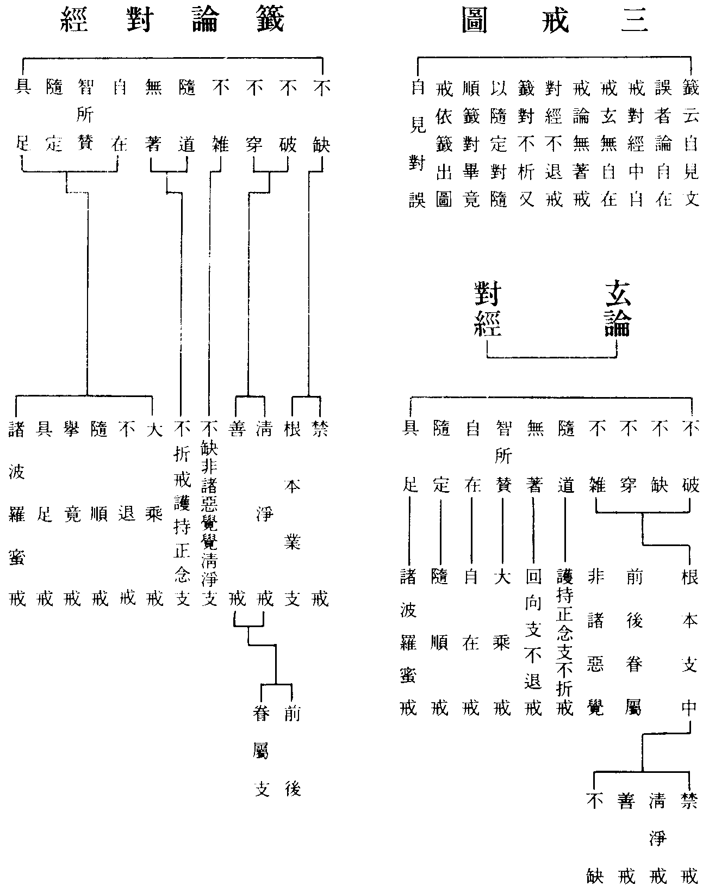

亦須徧集
集應作習。
玄籤備撿卷第二
釋籤卷第四(六紙玄三十九)
具如止觀記料簡同異
記引大論云下地諸惑因地未斷至樹下時以九無礙九解脫合為十八八忍八智合為十六為三十四心是俱舍頓斷之意也婆沙云下八地惑初修禪時已斷唯非想地九品全在(云云)俱舍龍樹俱不應誤俱舍取修禪時已斷惑竟不復更斷智論依餘部雖有漏斷未名為斷至樹下時俱斷非想八地俱得名為無漏也。
如止觀第五記
只是化他境中四悉檀各破四性之文耳如世界中破性者彼云或說心具一切法如云三界無別法唯是一心作或說緣生一切法如云善知識者是大因緣所謂化導或說因緣共生一切法如云水銀和真金能塗諸色像或言離生一切法者如云十二因緣非佛所作等其性自爾餘三悉檀各破亦爾。
六界十如結攝一切異名
如是相攝十二因緣中行有如是性攝無明愛取如是體攝名色乃至老死如是力攝無明愛取能生業力如是作行有能為苦作業乃至如是報攝行有招名色報攝四諦者相性攝集體攝苦作力因緣又攝果報及苦攝二諦者六道十如攝四教之俗等具如下文諸境開合。
於一一大開為四句
若謂地是有有即實實是堅義若謂地是無是亦有亦無是非有非無皆是堅義今明畢竟不可得亡是堅性也水性不住謂水為有有即是住乃至謂水是非有非無亦即是住今不住有四句亦不住無四句風性無礙謂有四句是礙火大不實火不從自生乃至不無因生本無自性賴緣而有故言不實觀色既爾受想行識一一入於如實之際。
無盡轉解脫火
轉字誤應作輪彼經云婆羅門告善財言善男子我唯得此菩薩無盡輪解脫如諸菩薩摩訶薩大功德燄能燒一切眾生見惑令無有餘必不退轉而我云何能知能說又云修學書算即事法即得悟入一切功巧神通智法門(云云)印等法下經中無門字。
結成雙非
淨名疏云諸法畢竟不生不滅是無常義者三藏明麤細生滅無常是無常非無常義若了諸法非生非滅橫計生滅故以四句撿生叵得即無有滅是則不生不滅即無常義五受陰洞達空無所起是苦義者三藏明麤細五陰此是苦非苦義衍門體達本無麤細之苦妄見故有體有即空不見苦相名無所起即是苦義諸法究竟無所有是空義者三藏所明生法二空此只是空非空義行中體此諸法即真如實相真空本來無有我與無我妄計有故說於無我若不得我亦無無我我與無我本來無二無二者即無性無性之性即真無我義也法本不生今則無滅是寂滅者三藏所明以有還無名寂滅涅槃此只是寂滅非寂滅義衍門明諸法從本來常自寂滅相即大涅槃不可復滅即真滅義也乃至云通途釋衍中五義亦得即是圓五義。
陰等十境唯在三教
人見斯文便謂圓教不立陰境意云理淨無染有何陰乎遂為之臆說多矣今詳斯文是開權之義耳指前三教不即之陰是圓性陰同在一念念體即是而為圓人初心觀境今試引文述義而質之云且如瓔珞經中所談自有佛土純說圓教無三教名若純說圓圓初心人既無陰境如何發軫而觀心耶又涅槃經中說法性五陰云色是佛性者三十二相如來常身常不改故是故說色名為佛性受是佛性者如來真實之樂謂畢竟受第一義受是如來常受想是佛性者如來真實之想名無想想無想想者非眾生男女想是如來常想行是佛性者行名壽命行因緣故獲得如來常住壽命識為佛性者乃是如來平等之心又云因滅是色獲得常色受想行識亦復如是五陰常住諸大乘經無不備載又今玄文示三諦境中初俗諦引大品云眾生色受想行識又云無等等色受想行識記主云五陰即是俗諦陰既至佛當知俗諦亦通至佛若曰無陰圓但真中欠俗諦也又云前之三教初心滅陰圓教初心一陰一切陰謂百界五陰咸空假中之謂也又文句記亦云二教初心皆滅陰入別教初心亦且破陰唯圓即觀一念三千三諦具足是則一心一切心一身一切身一土一切土既云身心何嘗無陰又既云三千三諦具足若不立陰只合談二千耳仁王經云法性色受想行識此實智真身亦有五陰應化因緣亦有五陰眾生性德之理亦有五陰又智論云菩薩不應作是念我以真智慧令色等諸法清淨而住其中何以故法無住處如地住水水住於風風住空空無所住本無住等前際是生死後際是涅槃俱不可得是無陰也俗諦是事若大品云一切法趣色是趣不過色是法界大都者則有陰三諦本一有無體同名為性陰不可思議以由眾生迷此性陰而起事陰故止觀中令觀事陰顯乎性陰破穢污陰已住實相陰中故曰如來妙色身等予不肖敢當反說何者藏通真理如雲外月是不說有陰也別教談中理不具陰而理在陰外待破九界陰已方得顯中若爾是前三教不立陰圓教立陰明矣今寄語晚秀孰為思之無謂圓教無陰而為教旨。
三寶交互
盜戒也盜錢滿五犯重盜境甚多且語三寶言交互者有二種一三寶互二當分互交者謂知事取僧糧食器具及以牛馬為佛像並得正重將佛法物僧用亦爾若佛塔有物乃至一錢以施主重心故捨諸天及人於此物中應生佛想塔想乃至風吹雨爛不得[卯/貝]寶供養以如來塔物無人作價故又律云佛殿塔上翎毛落地亦不得用以諸天皆作佛想故當體互者謂本造釋迦改作彌陀本作大品改作涅槃本作僧房改充車乘皆望前境理義可通但違施主心得互用罪今之主教者多有強索常住飲食米麵有取殿堂香油錢燭輙自私用雖資身於一朝當陷苦於千劫使有識者見之得不為寒心哉。
房
房戒有二一者無主僧不處分過量房戒二者有主僧不處分房戒無主房戒者具有五一須人經營妨修道業二多論云長己貪結壞少欲知足故三處處乞覔惱亂人非人 趣不生信敬壞滅正法令不久住故四專任自由不乞處分容障僧事多惱亂故五戒自損行違其慈道壞梵行故六緣成犯一無主二為己三自乞求四過量不處分五過量不處分想六房成結犯殘罪言重者四分云長佛十二搩手廣七搩手準五分佛搩手長二尺若爾是廣二丈四尺長一丈四尺難處者中有虎狼蟻子處也又四衢道中多人聚戲婬女市肆放牧惡獸等皆難處也妨處者律云乃至不容草車迴轉又是人田園并官地居士外道比丘尼地並是妨處也有主房戒者律云此房屬己身若死遠去不還隨意分處若與三寶親友白衣自賣取錢隨心自在唯不得賣地記云來善今注者欲人善之。
受食
資身之物受須有益不思方法食則得罪律制多法一制受意為斷竊盜二能受人為具戒比丘清淨持戒無毀故三所對境比丘不得自取食若無淨人處自燒器安水淨人下米自煑若熟從他受乃至受食法有六僧祇中只加三受舉要言之凡食麨餅羮果一切可食物並須從淨人邊受縱雪雹無淨人處聽自取食有者應受不爾者犯盜世多禪徒益食謂之營福而不知自犯惡觸又使受食者死墮餓鬼中及諸惡報蓋不曾聽學迷教故也。
受藥
藥有四種一者時藥謂麨飯乾飯華果細末磨食藕蘿蔔米汁乳酪等從旦至中聖教聽服二者非時藥謂酥油蜜石蜜生果汁要以水淨聽飲三者七日藥謂糖漿生酥熟酥五種脂受者聽以水淨得飲四者盡形藥謂胡椒畢茇訶梨勒此藥不任為食名盡形藥體聽久服方能除患形有三種一盡藥形二盡病形三盡報形已上等藥並須從淨人邊受已對首加法方可服用唯除時藥不須加法受法如律中。
說法豈求男子
與女說法過限戒也律云若不請者聽齊五六語若請說者若問義隨多少五分律由五六語便得解便制戒四分云五語者色受想行識無我也六語者眼耳鼻舌身意無常也為女說法須男子者有智男子解人情語可作證明乃俗男子也不求別女人證明者女人情欲同。
【玄】偷蘭遮
此翻大障謂犯之者能障善道此乃犯戒之方便也明了論云是重罪方便律中或次僧殘後者由是戒分所收罪名重也如初二篇遠近方便及獨頭正罪破僧盜四錢之類或提舍尼下者則威儀所收名輕律中多義蘭名不一謂因果輕重獨頭等其相如何如欲趣婬境初起心時結吉羅若身心進趣時則結輕蘭至彼摩觸則結重蘭餘三夷前方便皆爾成事則結夷罪也後起慶快心亦結吉下篇唯二方便謂輕吉重吉果蘭亦名獨頭謂用人皮石鉢灌下部若因蘭者謂婬前方便若輕蘭者謂瞋心裂破三衣若重蘭者謂破僧等今云前眷屬者語內蘭耳果蘭更分三品上品者如破轉法輪僧盜四錢盜僧食其謂十方常住物及十方現前亡五眾物但無滿五之義并婬非道及盜非人等並上品攝也中品者如破羯磨僧盜三錢作僧殘境僧殘境者為他出不淨并觸二形人及黃門人髮爪相觸等並中品攝也下品者惡心罵僧盜一錢用人髮食生肉剃三處毛三處者謂腋下及大小便道也又以酥蜜灌下分向謂下部也。
又畜石鉢及裸形露身行著外道衣鳥毛衣皮衣餐風服氣並外道法如此者並下品攝也據目連問罪報經一犯蘭罪墮泥犂中經人問歲數五十億六十年。
捨墮已下及諸經所制皆名為餘
梵語尼薩耆波逸提此云捨墮玄從十三僧殘已下名後眷屬非律出者名餘籤從捨墮已下并諸經所出者名餘玄籤二說進否不同玄從僧殘已下名後眷屬籤從捨墮已下名後眷屬一不同也又玄以二十四戒名餘籤以捨墮已下名餘者或恐記主謂捨墮是根本僧殘之餘或文誤學者詳之。

小吉與僧殘共篇
小吉者在五篇之末故名也梵語突吉羅此云惡作律分為二在身名惡作在口名惡說吉相如何乃諸篇之方便也仍有故誤且如婬戒發心欲起而未動方便若發不善心欲動身口並入故作攝也若心不正念戲笑妄語乃至衣鉢飲食服藥大小便利坐臥語默常爾一心若違者誤作也若懺悔者罪有輕重重則對首輕則責心言僧殘者即十三僧伽婆尸沙犯此戒者毗尼母云如人為他所斫殘有咽喉在故名也若懺悔者有四種法一治覆藏情過二治覆藏罪三治殘情過即六夜摩那埵也四治殘罪即二十僧出罪此並律中殘吉懺法名別之相也今言一槩對首何以知然四分往來媒嫁即梵網交會婬色也又四分假根謗即梵網無事謗他良善人也又四分受壞僧法即梵網破羯磨轉法輪僧也經云若犯四十八輕者對首懺悔罪便得滅當知僧殘在大乘中並輕垢攝。
【玄】六行觀
因果合論共十二行初欲界果明苦麤障者行人厭欲界底下色心飢渴寒熱刀杖所逼名苦此身三十六物屎尿臭穢名麤此身質礙為山川石壁所隔名障次色界果者攀上淨妙出色界樂上故名勝身如鏡像故名妙獲五神通山壁無礙名出名為六果更有六因具如禪門中。
【玄】八聖種
疾病等四及無常四前四對治方法是事觀後四緣是緣諦觀行修行此觀法有總有別總者謂以八觀觀彼四陰和合不實別者前之四除治四陰事受如病想如廱行如瘡識如刺以無常等治於四陰無常觀識苦觀於受空觀於想無我觀行以有此八易生厭離修習無漏今玄文中以不列名故出之。
即以四句撿之名為析破
第三既云觀析應云心動亂者四句撿之為因二法故動為不因二法故動為共為無因等如止觀中於世禪中一一四句推撿謂內婬法塵與意根合自他共等若不推撿隨禪受生修有漏禪者禪門中問云菩薩道應說諸法實相甚深空定何故說於凡夫四禪世間有漏生死虗誑之法答不然菩薩知五欲五蓋從因緣生無有自性空無所有捨之甚易眾生顛倒著此欲事貪少弊樂而離禪中深妙定樂菩薩為度是眾生故起慈悲心修行禪定離五欲五蓋入初禪次第入二三四禪故以禪法教化眾生不令損失法身慧命。
【玄】捨念及方便
禪門第五云觀修六行者於初禪第六默然心中厭離覺觀初禪為下若知二法動亂逼惱定心故為苦從覺觀生喜樂定為麤此覺觀法障二禪內淨名障攀上勝者二禪內淨安穩名勝喜因內淨而發名妙若得二禪即心得出離今欲遠離二禪依三種方便一不受不著故得離二訶責故得離三觀析故得離廣如禪門。
【玄】分別邪正
止觀第九云若心緣眾生決定得樂想心甚分明而所緣處不見眾生得樂是內不隱沒而外隱沒或有內心明淨外見眾生得樂是內外俱不隱沒隱沒者邪不隱沒者正又四無量禪依根本發是有漏依不淨等發是無漏有漏者邪無漏者正。
【玄】訶下攀上皆有方便
今立引禪門第六空處一方便為例訶下者行人欲修空處定深思色法過罪所謂若有色身則內有飢渴疾病大小便利等苦外受寒熱刀杖刑罸等苦又一切色法繫縛於心不得自在即心之牢獄令人受惱此略說色過之相攀上者讚歎虗空無色則無此過此處寂靜無眾惱患所以明訶責者即是習六行觀之相耳。
【玄】若作對治則復別途
六妙特勝通明慧性多少等禪門云此是隨機之說若隨對治則與此相違具如前五門中意五門意者禪定對治四分煩惱出生八萬四千塵勞又復五門次第淺深不同初息門即是世間凡夫禪次不淨門即是出世間禪諸聲聞人所行也次慈心門即是凡聖二人為大福德修慈入四無量心次因緣門即是辟支佛人所行次念佛門即是大菩薩之所行也。
次第亦別
禪門第七云十六特勝有定有觀能發無漏不隨二邊故名特勝問若爾應在觀禪後說淨禪行法既勝亦應在後答今明禪定力用淺深之相非是對緣利物之時所以者何背捨勝處悉是得解之觀力用既大斷結義強今此特勝唯是實觀能見身內三十六物其用劣弱不能斷結故前說。
【玄】佛言遊止三四出生十二
遊止二句出瑞應經今銷遊止者以心詣息止於散亂故也言三四者六妙門云因數息故出生四禪四無量四無色定十二者有二不同一者修四禪等因隨禪受生十二處為果二者今文云修證合論乃修六證六也修數者調和氣息從一至十攝心在數證數者覺心任運從一至十不加功力修隨者捨前數法一心依隨知息出入無分故意證隨者心既微細安靜不亂覺息長短徧身出入修止者息諸緣慮不念數隨疑寂其心證止者身心泯然入定不見內外相貌修觀者於定心中以慧分別出入息相如空中風身受心法皆無自性證觀心眼開明徹見三十六物及諸尸蟲破四顛倒修還者反觀觀心從何而生為從觀心生為非觀心生證還者心眼開發反本還源修淨者知五陰淨無妄分別證淨者三昧正受心無依倚已上並禪門文。
三未至
禪門云初禪前有未到今二禪何故復說未到地答舍利弗毗曇說有四未到四中間禪今由此義故更說有未到及中間也二禪中間者行者既能深心訶責初禪覺觀覺觀既滅五枝及默然悉謝已離初禪二禪未至於其中間亦有定法亦得名禪但不牢固無支林等扶助之法其心篾篾屑屑此是二禪未到之相餘三四禪未至之相準說可見。
聲非報法
俱舍云聲非報疏釋聲云何不從果報生隨欲生故若爾於假名論中云何說由永離惡口修不惡口戒故得大人梵音相生餘師說聲從第三傳從業生聲霜佉四大從霜佉四大生聲餘師說第五轉從業生聲果報四大生聲增長四大從長四大生聲等流四大從等流四大生聲。
滅受想
止觀云滅非想非非想三種受想而身證滅受之法以成解脫記釋云滅非想三種受想者若法行比丘作是思惟若有識想觸想及虗空想若修無想永滅此想想雖有三並是所滅又滅大地通心所中受想心所是故通名滅受想也婆沙云是定亦滅餘心所法何故但云滅受想耶答有云唯滅此二有云此二勝故有云亦滅餘心所且從勝說(云云)又問此定為是有心為是無心答尊者陀提婆說云有心若無心者云何說從彼定起名死耶如有比丘於日初分欲乞食去時天大雨恐損衣色立誓入滅定乃雨止雨經兩月乃止比丘定起即死色界不須段食入則經久問滅定何別答滅是一剎那定是久相續問心不動名定此定無心云何不動答雖無心不動有四大相續耳。
【玄】大經云無色界色非諸聲聞所知
聲聞得天眼何以不知無色界色有人云是如來藏色故不知今難如來藏色豈局無色耶須知聲聞隨所修禪報得天眼有下不知上之義也涅槃云二乘所得清淨天眼若依欲界四大眼根不見初禪若依初禪不見上地等今為引經以明例義迦葉品問云涅槃之義為色非色如來例云如非非想天亦色非色若非色者云何得住去來進止如是之義諸佛境界非二乘所知今釋其義經中如來既以無色天色例於涅槃以答迦葉當知二乘涅槃解脫者真空無相也是故非色如來涅槃解脫者顯法性陰也是故亦色非非想天亦色非色如涅槃亦色非色非聲聞所知者語勢指佛境界對。
彼文六度一一皆九名字並同如云自性施
論云自性施者謂菩薩思願與無貪俱不於身起身口業於法財施正律儀處二一切施者謂捨身名內施捨樂具名外施凡一切物未有不捨者三難施者謂菩薩有少財物自忍貧苦施與他人四一切門施者謂自物若勸他得物若自集布施若父母妻子若善友大臣親屬悉皆施與五善人施者謂信心布施恭敬布施自手施時不侵他施六一功行施者謂無依施廣施歡喜常施器施無非施七除惱施者謂須貪乘施乘乃至所須皆悉施與八此世他世施者謂施財施法無畏令諸眾生今世後世安樂九清淨施者謂不留難不異見乃至不背而不求恩不求報論文甚廣。
釋籤卷第五(一紙玄四七)
【玄】三品十惡
大經明殺有三若殺蟻子并畜生名下殺若殺凡夫至阿那含名中殺若殺父母阿羅漢者名上殺餘惡可例之若準未曾有經以十善分三品謂下品十善是一念頃中品十善是一食頃上品十善是從旦至午反此者是三品十惡也據此亦可義分一日一月一年等三也大經約境未曾經是約時。
遮流約智用亡照約智體
若順玄文中道雙遮雙亡為體雙流雙照為用雖無心亡二照二亦任運寂知中道此與常途中道以雙遮為體雙照為用其義大同若據此義應亡遮亡約智體流照約智用也今記云以即等而流為用即亡而照為體見體用平遮或寫誤學者詳之。
覺力者善不善
第二十六云成就四力離五怖畏五者謂不活惡名眾中死惡趣是為五怖畏何等為覺力於善不善法如實知有罪無罪習近不習近卑法勝法黑法白法有分別法無分別法緣起法非緣起法如實知是名覺力何等為精進力謂四正勤何等為無罪謂無身口意之罪何等為攝力為四攝事惠施愛語利行同事不習近者謂不善法不應親近勝法者四攝中惠施則法施最勝愛語中應時說法利行中令不信者生信同事中阿羅漢乃至須陀洹各以果授淨戒者以戒授皆同事中最勝白法者十善法餘諸經中不釋今謂道品分別三無為無分別果向是緣起真諦非緣起餘有罪黑法等反顯可知也。
廣發諸願
經云此歡喜地發大誓願願受一切佛法輪願一切佛菩提願護一切諸佛教願持一切諸佛法廣大如法界究竟如虗空又發願云願一切世界佛興于世從兜率天沒入胎等(云云)廣大如法界究竟如虗空又願云願一切菩薩理行願廣大無量又願三界六趣一切生處我皆教化又願一切世界如帝網差別種種不同知皆明了現前知見已上諸願皆結句云廣大如法界究竟如虗空。
虗空身
經云知虗空身無量相周徧相無形相不異相無邊相知顯色身別異相論云知虗空相者知無盡相徧相不可見相無障礙相無為相能通受色相因色分別皆悉能知此四身者人或迷之往往臆說今節經論以示之其餘六身稍似可識故置而不節。
又嬰兒者厭生死苦等
欣厭嬰兒經中有廣略二釋初略釋者知生死過是識苦集見涅槃樂是識道滅次廣釋者有斷不斷此約集諦正使有斷習氣不斷習氣有真不真此約苦諦生死中無涅槃則不真離生死有涅槃此則有真有修不修此約道諦四倒惑等是不修四念處等是修有得不得此約滅諦利使鈍使名不得見道修道名寫得已上斷真修得並是經文章安節釋耳。
後文無譬
玄中所引經文前文有譬後文無譬其文如何能說大字不見晝夜不造作大小事楊樹黃葉此四是有譬也又云非道為道以能生道微因緣故即同二乘嬰兒此是無譬又經中譬後復云若有眾生厭生死時如來則為說於二乘此又是經中後文無譬也。
【玄】不能起住來去語言如經
經云如來亦爾不能起者如來終不起諸法相不能住者如來不著一切諸法不能來者如來身行無有動搖不能去者如來已到大般涅槃不能語者如來雖為一切眾生演說諸法實無所說疏釋云不起譬常不起邊中諸法之相不住譬淨不著生死涅槃不來譬我不從淺至深動搖彼此不語譬樂寂滅涅槃不可言說。
慈悲喜文末一子地
經云菩薩修慈悲喜已得住極愛一子之地譬如父母見守安穩心大歡喜菩薩亦爾視諸眾生同於一子見修善者生大歡喜又如父母見子遇患心生苦惱菩薩亦爾見眾生為煩惱病之所纏切心生愁惱憂念如子身諸毛孔血皆流出。
捨文末證空平等地
經云菩薩修捨心時得住空平等地空平等者不見父母兄弟怨等云何名空所謂內空(真諦空)外空(俗諦空)內外空(二俱空)有為空(生死)無為空(涅槃)無始空(三諦相即不見無始)性空(三諦體性)第一義空(真中體即)空空(一切空)大空(三諦相即)菩薩得如是空門則得住於空平等地也。
【玄】大品云從初發心行生修
大論八十三卷中解釋籤引經云色是寂滅故色是虗誑故色不實故此乃是經中釋行之一義也若生修者經云云何生般若波羅蜜如虗空故應生云何修般若波羅蜜諸法破壞故應修(已上並是經文)。
論釋云色是寂滅者佛答五眾是一切世間心所行結縛處涅槃是寂滅相菩薩以般若利智慧力能破五眾通達令空即是涅槃寂滅相出住六情中還念寂滅相知世間諸法皆是虗誑不實是名行般若無定相不可得說言語道斷如虗空故言生又虗空中無有法生虗空亦不能有所生故名生菩薩得般若已入深禪定觀諸禪定及禪定緣皆破壞何以故般若波羅蜜捨一切法不著相故是名修又云一彈頃六十念念念生滅云何一心常念薩婆若不令餘念得入答心有二種一者念念生滅心二者相續次第生總名一心是時不令貪恚等心久住以能障般若故念少則不能為害此為初心菩薩故說大菩薩則行餘善法皆與般若和合餘心不可入等籤引釋云行在乾慧地等是論中引古人釋耳今具引論文使學者識行生修之相。
以祭四海
禮記十四祭法曰燔(音煩)柴於泰壇祭天也瘞(於滯反)埋於泰折(之設反)祭地也用騂(私官反)犢埋少牢於泰昭祭時也相(如羊反)近(巨依反)於炊壇祭寒暑也又祭日月星等尚書云望于山川徧于群神注云九州大川五岳四瀆之屬一一望祭之羣神謂丘陵墳衍古之聖賢皆祭也。
由二不超欲由三復三復還下
疏釋云由貪嗔二不超欲界設有能上至有頂由身見等三還生欲界故說貪嗔如守獄卒身見等三如防羅人故名順下分有餘師說下謂有情界生也及取下界謂欲界也問預流果云何說斷三結答頌曰攝根門故三言攝門者謂身見即苦門戒禁取即苦道二門疑通四門謂四諦也攝根者邊見依身見轉取身依戒禁取轉邪見依疑轉。
【玄】須陀洹若智若斷皆是菩薩無生法忍
止觀第六問云三乘智斷既齊何故二乘名智斷菩薩名法忍答忍因智果故十五心名忍十六心名智又二乘取證宜智斷為名菩薩一分思盡一分自在生故品品死品品生能忍生死勞苦不入涅槃名忍耳。
此中問意與止觀稍似有殊
止觀問云三乘共斷其義已顯用何為據更獨開菩薩地答大論三處判焦炷三處菩薩斷惑乾慧是伏惑尚得為初焰今取八人真諦為初焰有何不可輔行六云大論七十五燈炷品云十地有二一菩薩初地為初焰二聲聞見地為初燄若獨菩薩地即歡喜地為初焰論文既以菩薩初地而為初燄故今取之以為況釋於共伏道尚得以為菩薩初燄今但退取共斷位者為獨菩薩初燄有何不可故知此文別判通教菩薩位也。
【玄】五行十功德
十功德文在高貴德王菩薩品中涉經文五卷解釋甚廣今錄示十德之名云。
○一者有五一不聞者聞二聞已能為利益三能斷疑惑心四慧心正直無曲五能知如來密藏。
○二者修大涅槃昔不得而今得昔不見而今見昔不聞而今聞昔不知而今知。
○三者捨慈得慈得無緣慈。
○四者根深難拔自身生決定想不觀福田及非福田修淨佛土滅除諸有斷除業緣修清淨身了知諸緣離諸怨敵斷除二邊是名十事第四者唯修九事不修淨土。
○五者諸根完具不生邊地諸天愛念常為天魔沙門剎利等守護得宿命智。
○十者修習三十七道品入大涅槃常樂我淨為諸眾生分別演說大涅槃經顯示佛性等輔行云五行文末雖再釋初地功德之相以十功德對於十地文相宛然。
六住
地持云從初發心住至十地束為六住一性種住二解行住三淨心住四行道跡住五決定住六究竟住解行住是初地方便淨心住是入初地乃至究竟住是第十地止觀釋種性住云若人無有種性雖生善道數退數進不得在菩薩六人數中若種性處成就無有退失數數增進得是一人也淨心入初地者得出世間心離凡夫我障故行道跡住從二地至七地住修道也決定住者八地九地報行不退也究竟住十地者學行窮滿。
【玄】地持九種戒定慧
只是六度皆九中義也九戒者謂一自性戒二一切戒三難戒四一切門戒五善人戒六一切行戒七除惱戒八此世他世戒九清淨戒九定者一自性禪二一切禪三難禪四一切門禪五善人禪六一切行禪七除惱禪八此世他世禪九清淨禪九慧者名亦同耳。
與大論中因中總別果上總別
論釋四智云或言因中權實故言道慧道種慧入空為實慧入假為權慧或言果上權實故言一切智一切種智直緣中道名多一切智雙照二諦名一切種智或言因中總別果上總別直言道慧一切智名總各加種者故名別也。
玄籤備撿卷第二